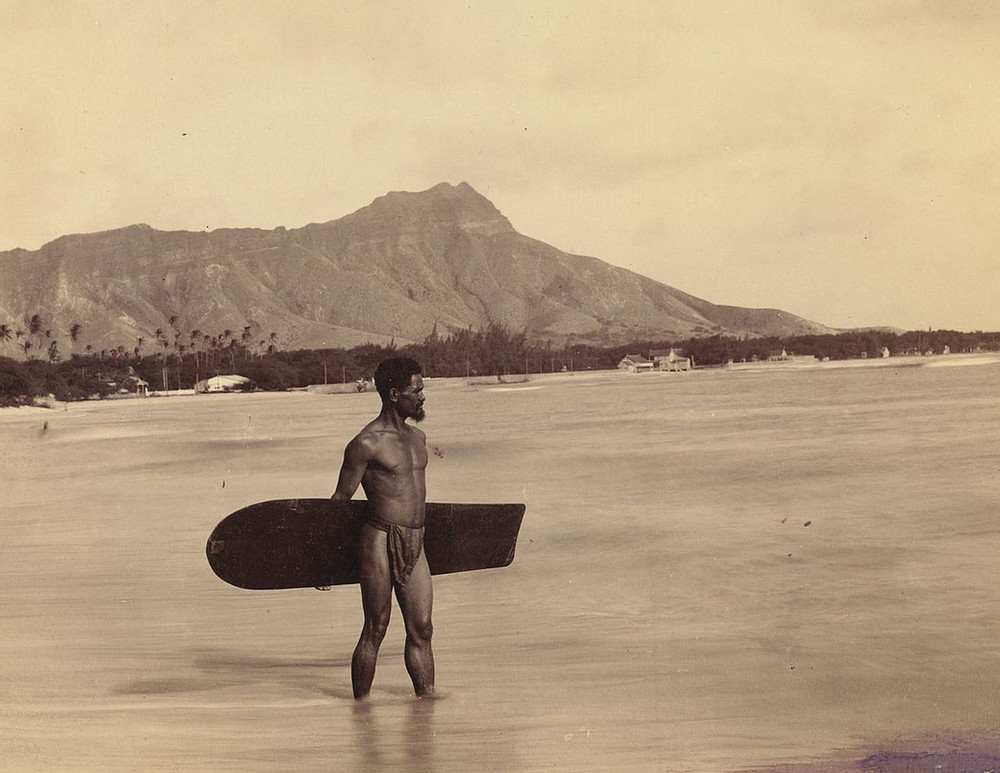
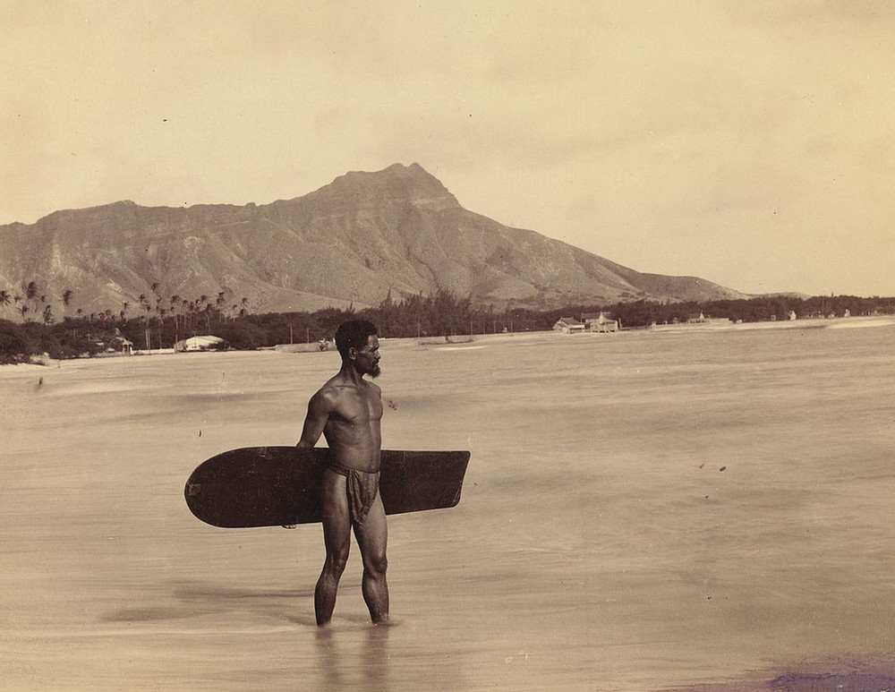

HISTÓRIA DO SURF |
HISTÓRIA DO SURF |
A origem do surf é disputada entre os povos peruanos e polinésios. A prática de deslizar sobre as ondas há muito tempo já era conhecida pelos povos polinésios, que povoaram grande parte das ilhas do Oceano Pacífico, além do litoral pacífico das Américas. Os primeiros relatos do surf dizem que este foi introduzido no Havaí pelo rei polinésio Tahíto. Outros relatos dão conta de que , muito antes dos havaianos, antigos povos peruanos já utilizavam uma espécie de canoa confeccionada de junco para deslizar sobre as ondas. O primeiro relato escrito da observação de pessoas a fazerem surf, foi feito pelo navegador Inglês James Cook que gostou do esporte por se tratar de uma forma de relaxamento. Utilizavam-se,inicialmente, no Havaí pranchas de madeira denominadas Olo e Alaia e, no Peru, de junco. As pranchas eram fabricadas pelos próprios usuários. Acreditava-se que, ao fabricar sua própria prancha, se transmitiam todas as energias positivas para ela e, ao se praticar o esporte, se libertava das "energias negativas". Os primeiros praticantes desse esporte acreditavam que sua prática seria um culto ao espírito do mar. O reconhecimento mundial do esporte veio com o campeão olímpico de natação e pai do surf moderno, o havaiano Duke Paoa Kahanamoku. Ao ganhar a medalha de ouro nos jogos olímpicos de 1912, em Estocolmo, o atleta disse em entrevista que o seu treino se resumia em |
"cavalgar sobre as ondas com uma tábua de madeira" e, desse modo, passou a ser o maior divulgador do esporte no mundo. Com isso, o arquipélago do Havaí e os seus esportes típicos passaram a ser reconhecidos internacionalmente.No início do século XX Duke promoveu o surf iniciando demonstrações em outras regiões do mundo como a Califórnia, França, Austrália, América do Sul e África. Por volta da década de 1940, o esporte popularizou-se na costa oeste dos Estados Unidos, tornando-se popular entre os jovens, principalmente nas praias do sul da Califórnia. Então, com o início dos primeiros campeonatos de surf em 1974, o surf tornou-se popular em todo o mundo, no início de um emergente profissionalismo. A evolução do surf moderno foi especialmente marcado pela apresentação de novos modelos de pranchas de surf, como a prancha twin-fin de Mark Richards em 1980 e, depois, pela prancha tri-fin de Simon Anderson em 1981. Esses australianos tornaram esse país o detentor do maior número de campeões mundiais de surf. A organização do campeonato mundial é responsabilidade da Associação de Surfistas Profissionais. Pode-se afirmar que o surfista mais conhecido do mundo é o Floridense Kelly Slater, que soma 11 títulos mundiais. Em 2016, foi assumido pelo Comitê Olímpico Internacional (COI) como esporte olímpico, a partir dos Jogos Olímpicos de 2020, no Japão. |
   |